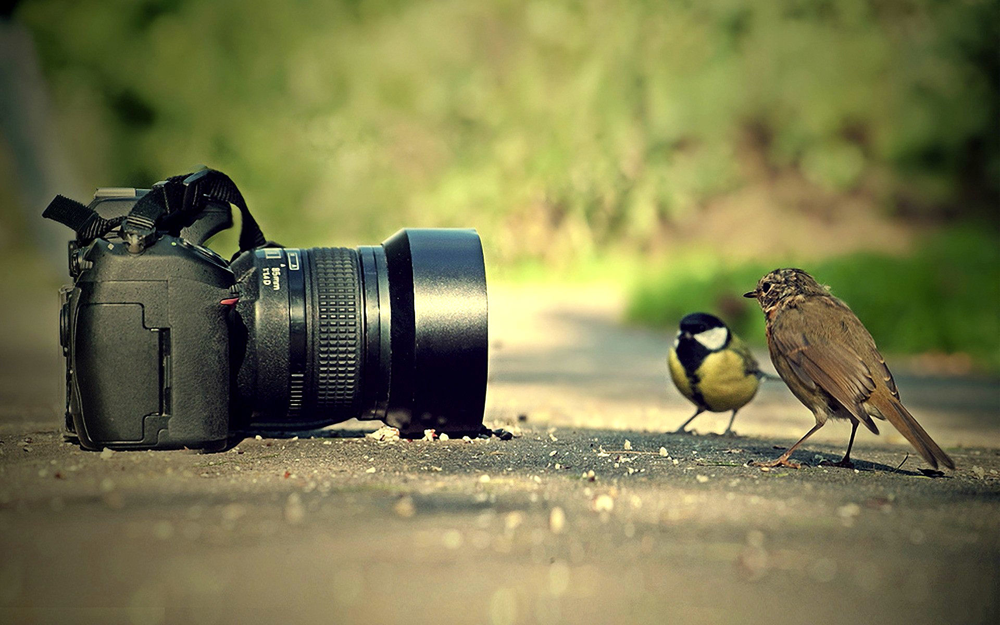

NATURE PHOTOGRAPHY
Last Updated on Dec 7, 2019
MOUNTAIN PHOTOGRAPHY......
Mountain photography is a specific and very adventurous genre. People passionate about capturing mountain backgrounds carefully choose landscapes and create images with a straight horizon. In mountain photography, the main principles are shooting long and shooting wide.
WILDLIFE PHOTOGRAPHY
Last Updated on Feb 15, 2020
WILDLIFE PHOTOGRAPHY......
Wildlife photography is a genre of photography concerned with documenting various forms of wildlife in their natural habitat.
As well as requiring photography skills, wildlife photographers may need field craft skills. For example, some animals are difficult to approach and thus a knowledge of the animal's behavior is needed in order to be able to predict its actions. Photographing some species may require stalking skills or the use of a hide/blind for concealment.
While wildlife photographs can be taken using basic equipment, successful photography of some types of wildlife requires specialist equipment, such as macro lenses for insects, long focal length lenses for birds and underwater cameras for marine life. However, a great wildlife photograph can also be the result of being in the right place at the right time and often involves a good understanding of animal behavior in order to anticipate interesting situations to capture in photography.
About Us
WELCOME to our OFFICIAL website.
Some Popular Post
